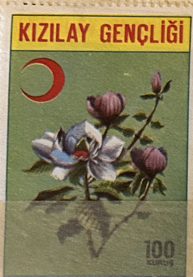
| SOURCE | TITLE| IMAGE MATCH | click to source page |
| kitantik | Efemera - 1976 Türkiye Kızılay Pulu 250 Kuruş - kitantik - kitaLog | 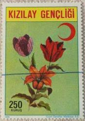 |
| Opium, in Turkey and in the World. / Ministry of Economy Narcotic Drugs Monopoly" Turkey, 1930 : r/PropagandaPosters | 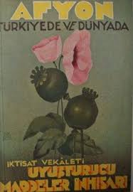 | |
| eBay | Individual Algerian Stamps for sale | eBay | 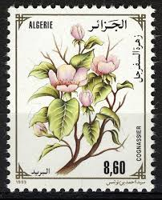 |
| Tumblr | vintage postage stamps — Hong Kong postage stamp: Dragon Boats c. 1975 ... |  |
| SlideServe | PPT - MAGNOLIA SOULANGEANA PowerPoint Presentation, free download - ID:3664726 | 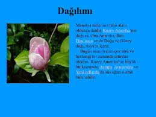 |
| eBay | Flowers Postage Turkish Stamps for sale | eBay | 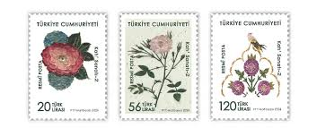 |
| Stamp Community Forum | Turkey Postal Tax Ra Stamp...children Kissing - No Date Ra170 Series - Stamp Community Forum | 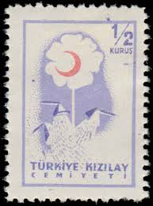 |
| Free stamp catalogue | Stamps from Türkiye - Freestampcatalogue.com - The free online stampcatalogue with over 500.000 stamps listed. | 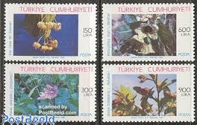 |
| Stamp Community Forum | Turkey Postal Tax Ra Stamp...children Kissing - No Date Ra170 Series - Stamp Community Forum | 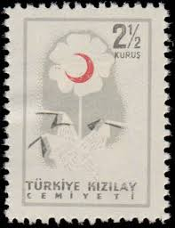 |
| Shazam | Ew Şeyhi Şirine - Muhammed Yeşilçayır: Song Lyrics, Music Videos & Concerts | 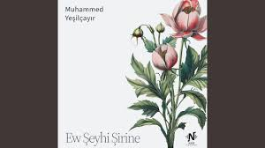 |
| Shazam | Şahı Gülistan - Muhammed Yeşilçayır: Song Lyrics, Music Videos & Concerts | 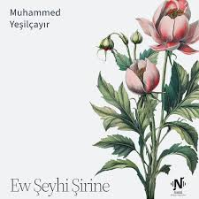 |
| sariucak.com | Turkish Stamps 1950 Issues - Part I • Ottoman Stamps - Turkish Stamps, Turkish Postal History, Stamps Sale, Scott, Yvert, SG, Stanley Gibbons, Michel, Pulhan, Isfila, Pulko | 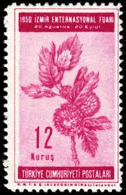 |
| Stamp Community Forum | Turkey Kizilay 1/2 Kuros Double Impression & Red Ink Error - Stamp Community Forum | 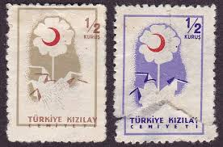 |
| 20 flower talk ideas to save today | flower meanings, language of flowers, planting flowers and more | 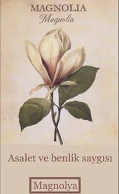 | |
| Stamp News Online | Spring Flowers on Postage Stamps, Stamp News Publishing | 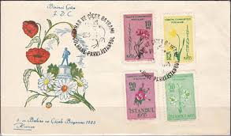 |
| SlideServe | PPT - Magnolia X soulangiana PowerPoint Presentation, free download - ID:2696692 | 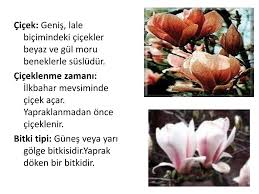 |
| Stamp Community Forum | Show Us Your Beautiful Flowers On Stamps! - Page 43 - Stamp Community Forum | 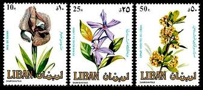 |
| PICRYL | 23 Flowers on stamps of germany, Postal service Images: PICRYL - Public Domain Media Search Engine Public Domain Search | 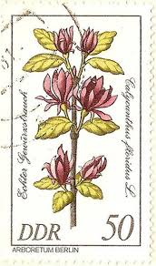 |
| South Korea 1158 - Mint-NH - Meesun Tree (cv $1.50) | Asia - South Korea, General Issue Stamp | 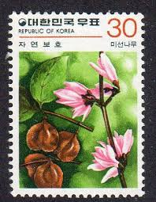 | |
| Mine nur (meovxyy) – Profile | Pinterest | ||
| eBay | TURKEY 2017, MOTIF THEMED OFFICIAL POSTAGE STAMPS-2, FLOWERS, MNH | eBay | 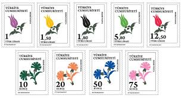 |
| sellosmundo.com | Turkiye kizilay Cemiyeti. Turkey Asia ref. 97983 | 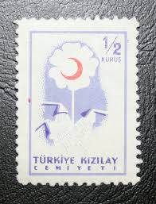 |
| eBay | Turkey Flowers Stamps for sale | eBay | 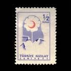 |
| Shutterstock | Poland 1962 August 8 90 Grosz Stock Photo 2485633395 | Shutterstock | 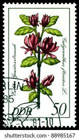 |
| Pingudu Müzayede | Online Live Auction of World Stamps, Postal History and Philately / 26 December, Sunday - 5:05 PM (Gmt +3) | Pingudu Müzayede | 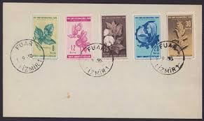 |
| Benim Koleksiyonum | 1958 Turkey Red Crescent Society Compassion Stamps Quartet K143 Block 1/2 Kurus Stamp | 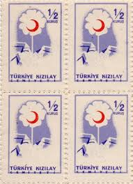 |
| HipStamp | Search "Turkey 1957" / HipStamp | 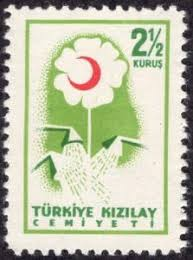 |
| influcast.com.br | Romania 5509-5512 (Complete.Issue.) Unmounted Mint/Never Hinged ** MNH 2000 That 20.Century (Stamps For Collectors) Space | 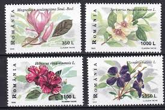 |
| Wikimedia.org | File:Stamp of Albania - 2001 - Colnect 370854 - Southern Magnolia Magnolia grandiflora.jpeg - Wikimedia Commons |  |
| ProBoards | Flowers on stamps | The Stamp Forum (TSF) | 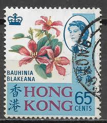 |
| buyhungarianstamps.com | #996-999 Turkey - UPU, 75th Anniversary (MNH) – Eastern Europe Postage Stamps | Hungaria Stamp Exchange | 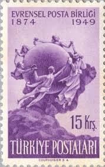 |
| T111 Scott 2045-48 Rare Magnolia - China Stamps | 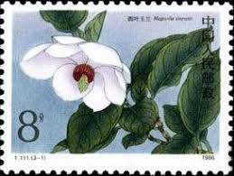 | |
| HipStamp | Niue #327a-327b Used | Australia & Oceania - Niue, General Issue Stamp / HipStamp | 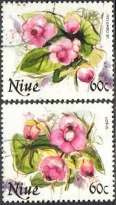 |
| Blogger.com | Postcard A La Carte: North Cyprus - Saint Barnabas Church, Famagusta | 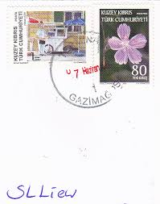 |
| commonwealthstamps.com | South West Africa 1990 Flora Set Fine Mint | 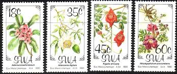 |
| Colnect | Stamp: Fig Tree (Ficus Carica) (Türkiye (Turkey)(Izmir International Fair, 1938) Mi:TR 1021,Sn:TR 791,Yt:TR 886,Sg:TR 1203 📮 | 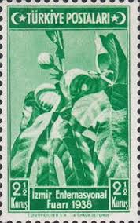 |
| eBay | Turkey Souvenir Sheet Stamps for sale | eBay |  |
| Stamp Community Forum | Latin Species Names For Plants & Animals - Page 40 - Stamp Community Forum | 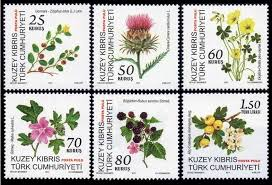 |
| Stamp Community Forum | The Stamps Of Turkey / Turkiye: On Steiner Pages. - Page 85 - Stamp Community Forum | 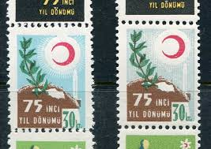 |
| Stampedia | stampedia TURKEY STAMP catalog | 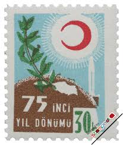 |
| ProBoards | Printing varieties, oddities, nitpicking, etc. | The Stamp Forum (TSF) | 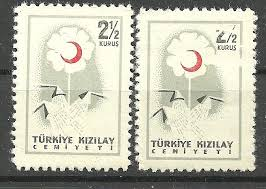 |
| Cyprus Stamps | NEW North Cyprus Stamps SG 2023 "Cyprus Endemic Plants" / KIBRIS ENDEMIKLERI Issue Date: 25 October 2023 | 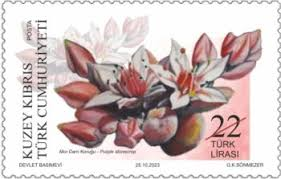 |
| eBay | Flowers Cypriot Stamps (1960-Now) for sale | eBay | 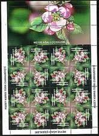 |
| Etsy | Vintage Stamp Vietnam - Etsy Norway | 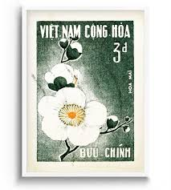 |
| BalkanPhila | 2017 Turkish Cyprus Flowers Set – BalkanPhila | 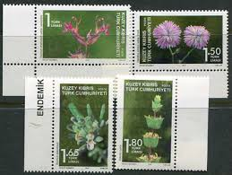 |
| Cyprus Stamps | North Cyprus Stamps SG 2011 Plant and Fruit | 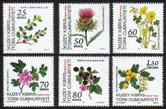 |
| efilatelija.lt | Yugoslavia stamps (1994) for sale. Great discoveries: aviation | 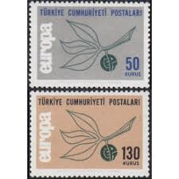 |
| eBay | US Flowering Trees 32c Stamp Set of 5 singles Scott #3193 - 3197 | eBay | 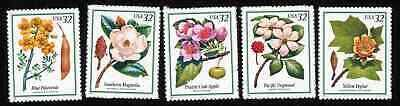 |
| 123RF | TURKEY- CIRCA 1941: Stamp Printed By Turkey, Shows Soldier And Map Of Turkey, Circa 1941 Stock Photo, Picture and Royalty Free Image. Image 12740801. | 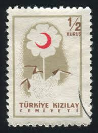 |
| HipStamp | Search "Turkey 1957" in Topicals / HipStamp | 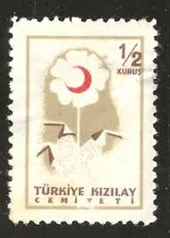 |
| Xabusiness.com | 2021 China Stamps | 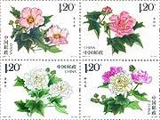 |
| Stampedia | stampedia TURKEY STAMP catalog |  |
| Todocolección | turquía - Buy Antique stamps of Turkey on todocoleccion | 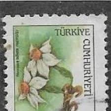 |
| Etsy | 1999 Romania Flower Postage Stamps / Magnolia, Hibiscua, Clematis, Camellia / Garden Diary, Nature Junk Journal, Altered Book Images, ACEO - Etsy | 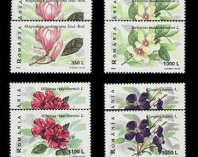 |
| Alamy | TURKEY- CIRCA 1957: stamp printed by Turkey, shows children, circa 1957 Stock Photo - Alamy | |
| Botanical Artists (@botanicalartists) • Facebook | ||
| Stampedia | TURKEY 1981 10 lira Definitive Stamps, 1977series | Traffic Sign,"Slow!" | |
| YouTube | One Stroke: Küpe Çiçeği (Lady's Eardrop) nasıl yapılır? Detaylı Anlatım! - YouTube | |
| eBay | 3193-3197 FLOWERING TREES Full Pane of 20 US 32¢ Stamps 1998 MNH USPS | eBay | |
| Colnect | Stamp: Mussaenda isertiana (Liberia(Flowers (1955)) Mi:LR 480,Sn:LR 353,Yt:LR 331,Sg:LR 766 📮 |